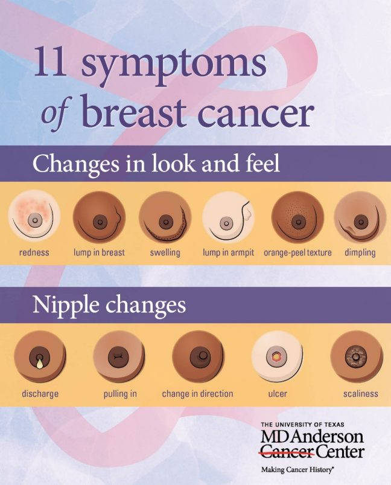

Mammograms & Breast Examination
Breast cancer screening exams help find breast cancer at an early stage. When found early, the chances for successfully treating the disease are greatest.
Along with regular exams, practice awareness. This means you should stay familiar with your breasts. That way you'll notice changes, like a new lump or mass. Then, report them to your doctor without delay.
Breast cancer screening recommendations depend on your age and level of risk for breast cancer.
- Age 25: Ask your doctor for a breast cancer risk assessment to determine if you are at average or increased risk. This assessment should be done no later than age 30.
The screening recommendations below apply to average risk women. Women at increased risk may need to start screening at an earlier age, get additional tests or be tested more often. Women who have been told they have dense breast tissue may also need additional tests.
- Age 25 to 39: Get a clinical breast exam every one to three years.
- Age 40 and older: Get a mammogram and clinical breast exam every year.
Clinical breast exam
During a clinical breast exam, a doctor, nurse or other health professional will examine your breasts visually and manually for lumps, skin abnormalities and abnormalities in your nipples. They will use their hands to press on your breasts, your nipples and the areas around your breasts, including your armpits.
Be prepared to answer questions about any changes you have noticed in your breasts, as well as your reproductive history. This will include the age of your first period, the date of your last period, and your pregnancy history.
Mammogram
A mammogram is an X-ray of your breast. Mammograms can detect tumors that are too small to be felt by you or your health care provider. Detecting breast cancer as early as possible is very important. The earlier it is detected and treated, the better.
Mammogram preparation
Prior to menopause, you may want to schedule your mammogram for the week following your menstrual period, since your breasts may be less tender. The following tips can help you have a smoother experience during your exam and ensure you get the most accurate results possible:
- Do not wear deodorant, powder, cream or ointment. These substances can show up on the X-ray as a breast problem.
- Wear a two-piece outfit so you only need to remove your top. You may be given a robe to wear during your exam.
- If you have developed any new breast problems or symptoms, please notify your doctor before your appointment as you may require a different screening test.
- Please leave jewelry and other valuables at home.
- If you have an external medical device, you may be asked to remove the device at your visit. Please bring any additional supplies you'll need.
- If you have had any breast screening exams before, bring your previous results and images with you. This includes tests like mammograms, ultrasounds, MRI and biopsies. It's important that your new radiologist be able to look at your previous mammograms to help them detect changes.
What to expect from a mammogram
Your screening mammogram will be performed by a technologist called a mammographer who is specially trained in mammogram positioning and techniques. The mammographer uses a special, low dose X-ray machine to create an image of the breast tissue. The machine has specialized paddles used to compress the breast to help detect findings that may be too small to feel.
Compression of the breast is sometimes uncomfortable. However, it is very important as it ensures a clear view of the breast tissue and reduces the amount of radiation needed to create your exam images.
Each breast will be compressed for 10 to 20 seconds while you are given instructions on when to hold your breath. Your mammogram images will be sent to a radiologist who will carefully review them to see if there is any need for additional testing. Your health care provider will then receive the finalized report.
It is not uncommon for your first mammogram to show findings that may require additional testing since there are no previous mammograms that can be used for comparison. Most findings are not cancer and are resolved by the additional tests.
An additional mammogram to evaluate a potential trouble spot is called a diagnostic mammogram. It will focus specifically on the area in question. In some cases, a breast ultrasound also may be recommended to evaluate the area.
Breast tomosynthesis (3D mammography)
Any woman who needs breast screening should consider 3D mammography, also known as breast tomosynthesis. It is an FDA-approved advanced technology that takes multiple images of breast tissue to recreate a 3-dimensional picture of the breast. In comparison, a regular mammogram takes a single image.
The 3D picture gives doctors a much clearer view of potential breast masses. It makes it easier to detect breast cancer, even at very early stages and in women with dense breast tissue. It also reduces the chances of false positives, which occurs when doctors think they see a potential abnormality, but none exists.
Women experience little difference between 3D mammography and a traditional mammogram. The tube taking the X-rays sweeps across the breast in an arch and takes about four seconds to gather images. 3D mammography produces a similar amount of low dose radiation as a regular mammogram, so it is not of greater risk to the patient.
Breast ultrasound
Breast ultrasound uses sound waves to produce detailed images that can help provide additional information about findings in your breast. Ultrasound is helpful for women who have dense breast tissue, which can make abnormalities hard to see.
Breast ultrasound also is often used as a follow up exam if a suspicious area is seen on a mammogram. It can make it easier to identify a lump as a fluid-filled cyst that is unlikely to be cancer versus a solid mass, which might require more testing.
Ultrasound is sometimes used to help guide a biopsy needle so tissue can be taken from the breast and tested for cancer. It is available at most breast imaging centers.
Breast MRI (magnetic resonance imaging)
If you have symptoms of breast cancer but mammogram and ultrasound results are unclear, a breast MRI may be recommended. In patients who already have breast cancer, a breast MRI also is sometimes performed to help confirm the size of a breast tumor and to define how much of the breast and surrounding structures are involved with disease. Breast MRIs are not usually offered as a routine screening examination for average-risk patients because they can produce false positive results that may lead to unnecessary follow-up care.
MRI uses powerful magnets to create a very detailed picture of your breasts. Patients have contrast dye injected through an IV to help highlight any potential problem areas. The breast MRI examination requires the patient to lie still in a small space for 30-45 minutes. Doctors can sometimes prescribe medication to help relax patients during the exam and the technologist can offer reassurance throughout the exam.
Contrast-enhanced digital mammography (CEM)
If you have symptoms of breast cancer, your doctor may consider ordering a contrast enhanced digital mammography (CEM) examination. CEM combines traditional mammography with an intravenous (IV) dye. The addition of the dye may improve the ability to see cancers that are not shown with mammography only. The test can also be used to find out the extent of cancer in women who have been diagnosed with breast cancer.
An IV is placed before the exam starts, and the mammogram images will be taken about two minutes after the IV contrast is injected. After the contrast is injected, some patients report feeling warm all over, needing to use the bathroom or getting a metallic taste in their mouth. These sensations typically resolve quickly. The contrast will identify areas where there are more blood vessels or leaky blood vessels, which may be associated with cancer.
Molecular breast imaging (MBI)
Molecular breast imaging is a promising new screening test for women who are at high risk of breast cancer or who have dense breast tissue. It uses a radioactive tracer to light up areas of cancer in the breast. The tracer is injected using an IV and then a specialized scanner can highlight any suspicious area.
Some studies have shown that molecular breast imaging is better at detecting breast cancer than traditional mammograms, but it is not used for routine breast cancer screening because it exposes patients to a much higher dose of radiation than mammograms do.
Multi-cancer detection (MCD) tests
Multi-cancer detection tests are blood tests that may detect some cancers, including breast cancer. UT MD Anderson offers follow-up appointments for patients who get positive results on MCDs through our Suspicion of Cancer Clinic. Click here to learn more.
Breast cancer symptoms
Breast cancer symptoms vary from person to person, and there is no exact definition of what a lump or mass feels like. Many breast cancers are found by mammograms before any symptoms appear. The best thing to do is to be familiar with your breasts so you know how "normal" feels and looks. If you notice any changes, tell your doctor. Knowing how your breasts look and feel, and being alert for the signs and symptoms of breast cancer, like a lump, can help you detect the disease early, when it's easiest to treat.
Breast self-exams
UT MD Anderson does not recommend that women practice regular breast self-exams in any certain way. Studies show that instruction-guided self-exams are not the best way to detect breast cancer early. Instead, UT MD Anderson recommends women always be aware of how their breasts look and feel, and see a doctor if they notice changes or abnormalities.
Most breast cancers that are discovered by women are found during regular daily activities like bathing, shaving or scratching. A formal self-exam is more likely to lead to false positives â that is, mistakes that suggest breast cancer when it is not there. And, formal self-exams also increase stress and anxiety for women.
Breast cancer risk factors
Breast cancer risk factors are things that may put you at increased risk for breast cancer. They can include a family history of the disease or certain genetic mutations. Having increased risk does not mean you will definitely get cancer. But you may need to start screening at an earlier age, get additional tests or be tested more often. Learn more about breast cancer risk factors. If you suspect you may be at increased risk, print and share the UT MD Anderson's breast cancer screening chart with your doctor.
Breast cancer recurrence
If you have had breast cancer, you need a different plan to check for cancer recurrence. Print the UT MD Anderson survivorship chart below that best describes your cancer and share it with your doctor. Your doctor can use this chart to create a tailored plan for you.
- Women with non-invasive breast cancer (ductal carcinoma in situ or DCIS)
- Women with invasive breast cancer
Reduce your risk for breast cancer
There are several healthy lifestyle choices you can make to reduce your risk of breast cancer and breast cancer recurrence.
- Keep a healthy weight and a low amount of body fat. Eating a healthy diet can help.
- Get active and sit less. Aim for at least 150 minutes of moderate or 75 minutes of vigorous physical activity each week. Do strength-training exercises at least two days a week.
- Avoid alcohol. If you drink, limit yourself to one drink per day if you are a woman.
- Choose to breastfeed. Try to breastfeed exclusively for six months after giving birth and continue even when other foods are introduced.
- Manage hormones naturally. If you are going through menopause and trying to control the symptoms, try non-hormonal methods before turning to hormone replacement therapy.
The screening recommendations on this page apply to women expected to live for at least 10 years. They're not for women who have a health condition that may make it hard to diagnose or treat breast cancer.
Complete our online form to schedule a mammogram in the Texas Medical Center, League City, The Woodlands or West Houston Diagnostic Imaging. We will call you within one business day to confirm.
Saturday appointments available at most locations.
